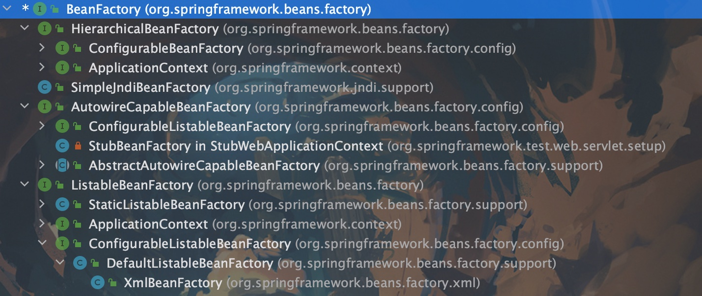

Spring工厂解析
1. 什么是工厂为什么又称之为容器
# 工厂是为了把创建对象与使用进行分离，其工厂模式主要职责就是为了创建对象
# 在spring的工厂中不仅需要创建对象，还需把其创建的对象保存起来进行维护防止重复创建，前提是创建的对象是单实例的(scope=singleton)
# 那么既然创建对象需要存储起来则用于存储对象的东西就叫容器(spring中采用Map存储)
# Scope(实例控制属性) 取值范围
## singleton 单例(默认，无论多少次创建只有一个实例)
## prototype 原型(每次创建都会产生新实例)
2. Spring工厂的分类
- BeanFactory(根容器)，定义了工厂的基本能力(getBean、isSingleton、isPrototype、containsBean等等)
- HierarchicalBeanFactory 提供了父子容器管理让其具有继承能力(父子容器管理，在SpringMVC中有相应的体现，父子容器相互配合，实际上就是此接口作用)
- ConfigurableBeanFactory 可配置工厂，为当前所创建的对象提供单例或多实例、类型转换器、后置处理Bean
- SimpleJndiBeanFactory
- AutowireCapableBeanFactory 提供了自动注入（autowire属性)以及初始化Bean(InitializingBean)、销毁Bean(DisposableBean)的能力
- ListableBeanFactory 提供了获取相关配置信息的能力(containsBeanDefinition()是否存在某个bean、getBeanDefinitionCount()获取bean的数量、getBeanNamesForType()基于名字获取bean类型等等)
- DefaultListableBeanFactory 复合了上面所有bean的能力是一个成熟的工厂
- XMLBeanFactory 使用基于XML配置的信息完成对Bean的创建(XmLBeanDefinitionReader通过此类读取XML的配置信息)，此工厂在Spring3.1版本中已过期

1. 从上可看出ApplicationContext工厂实现了HierarchicalBeanFactory与ListableBeanFactory那么此时的ApplicationContext是一个高级的工厂，具备了多种特性
2. Spring的设计是由一系列的工厂堆砌而成，每个工厂的职责单一，并且最终整合到了ApplicationContext当中